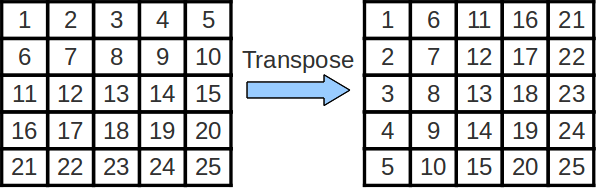
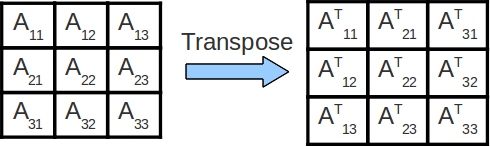

Lab 7: Caches
Deadline: Monday, March 28, 11:59:59 PM PT
Setup
In your labs directory, pull the files for this lab with:
For this lab, record your answers to the Tasks questions in the Lab 7 Google Form.
- The Google Form is very simple and thus incapable of recognizing typos or incorrectly formatted answers. However, it features response validation and the ability to view your score. Please use these to verify your submission.
- You also have the ability to edit your response so you can submit the form to save your progress
- We suggest you have a single tab with this form open alongside the spec as you work on Lab 7.
Review - Cache Policies
Write Policies
The cache contains a subset of the data that is stored in memory. When we perform a write operation, we need to ensure that anyone trying to access the data gets the most up-to-date copy. There are two different policies to handle writes:
Write-back
- On a write, we only write to the cache, we don't write to the memory
- To indicate that the data in the cache is more up-to-date than the data in the memory, we set the dirty bit of that cache line to 1. When this line gets evicted from the cache, the dirty bit will indicate that the line needs to be written to memory
- The data in the cache will be more up-to-date than the data in the memory for a short period of time. This is not a problem because if we want to access this data, we will search for it in the cache before looking for it in the memory
- Writing to the cache is much faster than writing to the memory which makes the write latency of write-back caches smaller than write-through caches
- The write-back policy also reduces the number of writes to memory. Once we bring a piece of data into the cache, we may write to it several times before evicting it from the cache. With the write-back policy, we only have to write to the memory when the line is evicted instead of every time it is updated
Write-through
- On a write, data is written to both the cache and main memory
- Writing to the cache is fast, but writing to main memory is slow; this makes the write latency in write-through caches slower than in a write-back cache
- Write-through caches are simpler to implement than write-back caches
Allocation Policies
Write-allocate
- On a write miss, you pull the block you missed on into the cache
No write-allocate
- On a write miss, you do not pull the block you missed on into the cache. Only memory is updated
- On a read miss, the data is still loaded into the cache
Common Combinations
Write-through/no-write allocate:
- On write hits write to both the cache and main memory
- On write misses, the main memory is updated and the block is not brought into the cache
- On read misses, the block is brought into the cache
- If a read of the same block occurs after the write-miss, there would be an unnecessary miss (why is this?)
- This policy is useful for when we are writing to a piece of data that we don't plan to to access again
Write-back/write allocate:
- On write hits, only the cache's copy is updated and therefore the dirty bit is set
- On write misses, the corresponding block is brought into the cache, updated, and the dirty bit is set to 1
- If the same block gets accessed, all subsequent writes would be hits and the dirty bit would be set until the block is evicted, at which point it would be moved back to main memory
Replacement Policies
- LRU (Least Recently Used) — When we decide to evict a cache block to make space, we select the block that has been used the furthest back in time of all the blocks.
- Random - When we decide to evict a cache block to make space, we randomly select one of the blocks in the cache to evict.
- MRU (Most Recently Used) — When we decide to evict a cache block to make space, we select the block that has been used the most recently of all the blocks.
Exercise 1 - Venus Cache Simulator
Venus simulates a write-through, write-allocate cache (which is not a common convention). We will only be using Venus to track hit patterns. Write-through and write-back caches behave similarly on hits (both write to the cache), so the hit/miss patterns you see in the Venus cache simulator would be the same even if Venus simulated a write-back cache.
This exercise will use Venus's cache visualization tool to analyze the performance of the code found in cache.s. You will be modifying parameters in the code to analyze how they affect cache performance.
For each of the scenarios below, you'll be repeating these steps:
- In the code for
cache.s, set the appropriate Program Parameters as indicated at the beginning of each scenario - Go to Simulator-->Cache to set the appropriate Cache Parameters as indicated at the beginning of each scenario.
- As you execute code in Venus, any DATA memory access (load or store) will show up (instruction fetches not shown because instructions are loaded into a separate instruction cache that is not shown in Venus).
The Cache Simulator will show the state of your data cache. If you reset your code, you will also reset the cache hit/miss rate as well!
IMPORTANT: If you run the code all at once, you will get the final state of the cache and hit rate. A useful strategy might be setting a breakpoint in the loop wordLoop right before or after each memory access to see exactly where the hits and misses are coming from.
The following are good questions to ask yourself as you are analyzing the performance of the cache:
- How big is one cache block?
- How many consecutive accesses (taking into account the step size) fit within a single block?
- How much data fits in the WHOLE cache?
- How far apart in memory are blocks that map to the same set (and could this create conflicts)?
- What is your cache's associativity?
- Where in the cache does a particular block map to?
- When considering why a specific access is a miss or hit: Have you accessed this piece of data before? If so, is it still in the cache or not?
Action Item
Read through cache.s to understand what the program does. Simulate the following 3 scenarios in Venus and answer the their corresponding questions.
Submission: Answer the questions about each scenario in the google form linked above.
Scenario 1
Program Parameters: (set these by initializing the a registers in the code)
- Array Size (
a0): 128 (bytes) - Step Size (
a1): 8 - Rep Count (
a2): 4 - Option (
a3): 0
Cache Parameters: (set these in the Cache tab)
- Cache Levels: 1
- Block Size: 8
- Number of Blocks: 4
- Enable?: Should be green
- Placement Policy: Direct Mapped
- Associativity: 1 (Venus won't let you change this with the Direct Mapped placement policy, why?)
- Block Replacement Policy: LRU
Tip: If it's hard for you to visualize what's getting pulled into the cache on each memory access just from staring at the code, try getting out some paper and a pencil. Write down what the tag:index:offset (TIO) breakdown of the 32-bit addresses would be, figure out which memory addresses map to which set in the cache with the index bits, and see if that helps.
Questions
Answer the questions found in the google form.
Scenario 2
Program Parameters: (set these by initializing the a registers in the code)
- Array Size (
a0): 256 (bytes) - Step Size (
a1): 2 - Rep Count (
a2): 1 - Option (
a3): 1
Cache Parameters: (set these in the Cache tab)
- Cache Levels: 1
- Block Size: 16
- Number of Blocks: 16
- Enable?: Should be green
- Placement Policy: N-Way Set Associative
- Associativity: 2
- Block Replacement Policy: LRU
Questions
Answer the questions found in the google form.
Scenario 3
Program Parameters: (set these by initializing the a registers in the code)
- Array Size (
a0): 128 (bytes) - Step Size (
a1): 1 - Rep Count (
a2): 1 - Option (
a3): 0
Cache Parameters: (set these in the Cache tab)
- Cache Levels: 2
NOTE: Make sure the following parameters are for the L1 cache! (Select L1 in the dropdown located right next to the replacement policy)
- Block Size: 8
- Number of Blocks: 8
- Enable?: Should be green
- Placement Policy: Direct Mapped
- Associativity: 1
- Block Replacement Policy: LRU
NOTE: Make sure the following parameters are for the L2 cache! (Select L2 in the dropdown located right next to the replacement policy)
- Block Size: 8
- Number of Blocks: 16
- Enable?: Should be green
- Placement Policy: Direct Mapped
- Associativity: 1
- Block Replacement Policy: LRU
Questions
Answer the questions found in the google form.
Exercise 2 - Loop Ordering and Matrix Multiplication
NOTE: For this exercise, using the hive machines is recommended! This exercise depends on certain performance characteristics that may be different on your local machine.
Matrices are 2-dimensional data structures where each data element is accessed via two indices. To multiply two matrices, we can simply use 3 nested loops below, assuming that matrices A, B, and C are all n-by-n and stored in one-dimensional column-major arrays:
for
for
for
C += A * B;
Matrix multiplication operations are at the heart of many linear algebra algorithms, and efficient matrix multiplication is critical for many applications within the applied sciences.
In the above code, note that the loops are ordered i, j, k. If we examine the innermost loop (the one that increments k), we see that it...
- moves through B with stride 1
- moves through A with stride n
- moves through C with stride 0
To compute the nxn matrix multiplication correctly, the loop order doesn't matter.
BUT, the order in which we choose to access the elements of the matrices can have a large impact on performance. Caches perform better (more cache hits, fewer cache misses) when memory accesses take advantage of spatial and temporal locality, utilizing blocks already contained within our cache. Optimizing a program's memory access patterns is essential to obtaining good performance from the memory hierarchy.
Take a glance at matrixMultiply.c. You'll notice that the file contains multiple implementations of matrix multiply with 3 nested loops. Think about what the strides are for the nested loops in the other five implementations.
Note that the compilation command in the Makefile uses the '-O3' flag. It is important here that we use the '-O3' flag to turn on compiler optimizations. Compile and run the code with the following command, and then answer the questions below:
This will run some matrix multiplications according to the six different implementations in the file, and it will tell you the speed at which each implementation executed the operation. The unit "Gflops/s" reads, "Giga-floating-point-operations per second." THE BIGGER THE NUMBER THE FASTER IT IS RUNNING!
Action Item
Your answers to the following questions should go into the corresponding section of the Lab 7 Google Form; all answers should be lowercased.
- Which 2 orderings perform best for these 1000-by-1000 matrices?
- Which 2 orderings perform the worst?
Exercise 3 - Cache Blocking and Matrix Transposition
NOTE: For this exercise, using the hive machines is recommended! This exercise depends on certain performance characteristics that may be different on your local machine.
Matrix Transposition
The swapping of the rows and columns of a matrix is called a "transposition". An efficient implementation can be quite helpful while performing more complicated linear algebra operations. The transpose of matrix A is often denoted as AT.
Cache Blocking
In the above code for matrix multiplication, note that we are striding across the entirety of the A and B matrices to compute a single value of C. As such, we are constantly accessing new values from memory and reuse very little cached data! We can improve the amount of data reuse in the caches by implementing a technique called cache blocking. More formally, cache blocking is a technique that attempts to reduce the cache miss rate by further improving the temporal and/or spatial locality of memory accesses. In the case of matrix transposition, we consider performing the transposition one block at a time.
Things to note: In the above image, we transpose each submatrix Aij of matrix A into its final location in the output matrix, one submatrix at a time. It is important to note that transposing each individual subsection is equivalent to transposing the entire matrix.
Since we operate on and finish transposing each submatrix sequentially, we consolidate our memory accesses to that smaller chunk of memory when transposing that particular submatrix. This increases our degree of spatial locality, making our cache performance and thus our program run faster.
Action Item
Your task is to implement cache blocking in the transpose_blocking() function inside transpose.c. You may NOT assume that the matrix width (n) is a multiple of the block size. By default, the function does nothing, so the benchmark function will report an error. After you have implemented cache blocking, you can run your code by typing:
You can specify the width of the matrix (n) and the blocksize in test_transpose.c. The default setting is n=12000 and blocksize=80.
Some tips to get started:
Start by looking at the transpose_naive function included in the file. Notice that the index y strides vertically across the WHOLE src matrix in one iteration of the inner loop before resetting to 0. Another way to say this is that the index x only updates after y is done going from 0 all the way to n.
Instead of filling out dst one column at a time, we would like to fill out dst square chunks at a time, where each square chunk is of dimension blocksize by blocksize.
Finally, since we can't assume that n is a multiple of blocksize, the final block column for each block row will be a little bit cut-off, i.e. it won't be a full blocksize by blocksize square. In addition, the final block row will all be truncated. To fix this problem, you can do the exercise assuming that n is a multiple of the blocksize and then add in a special case somewhere to do nothing when your indices reach out of bounds of the array.
Hint: A standard solution needs 4 (four) for loops.
Once your code is working, make sure you can answer the following questions.
Part 1 - Changing Array Sizes
Fix the blocksize to be 20, and run your code with n equal to 100, 1000, 2000, 5000, and 10000.
At what point does cache blocked version of transpose become faster than the non-cache blocked version?
n = 5000, n = 10000Why does cache blocking require the matrix to be a certain size before it outperforms the non-cache blocked code?
With a bigger matrix size, parts of the matrix can't fit inside the cache, leading to more cache misses from non-blocked code. Blocked code would consolidate accesses to a smaller portion of memory, giving more cache hits. With a smaller matrix size, most of the matrix can probably fit in the cache, so blocking results in more overhead (for loop exits) and doesn't provide a significant increase in cache hit rate.Part 2 - Changing Block Size
Fix n to be 10000, and run your code with blocksize equal to 50, 100, 500, 1000, 5000.
How does performance change as blocksize increases? Why is this the case?
As the blocksize increases, performance increases until blocksize = 500, then it decreases again.Why: When the blocksize is too large, the entire block cannot fit inside the cache, negating the advantage of cache blocking. In fact, if the blocksize keeps increasing, we just arrive at the naive approach again.
Exercise 4 - Feedback Form
We are working to improve the labs for next semester, so please fill out this survey to tell us about your experience with Lab 7. The survey will be collecting your email to verify that you have submitted it, but your responses will be anonymized before the data is analyzed. Thank you!
Submission
Please submit the Lab 7 Google Form. Then save, commit, and push your work, and submit to the Lab 7 assignment on Gradescope.